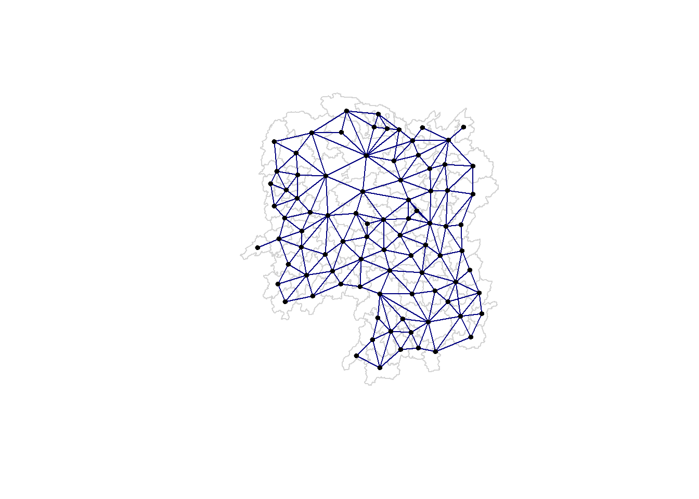
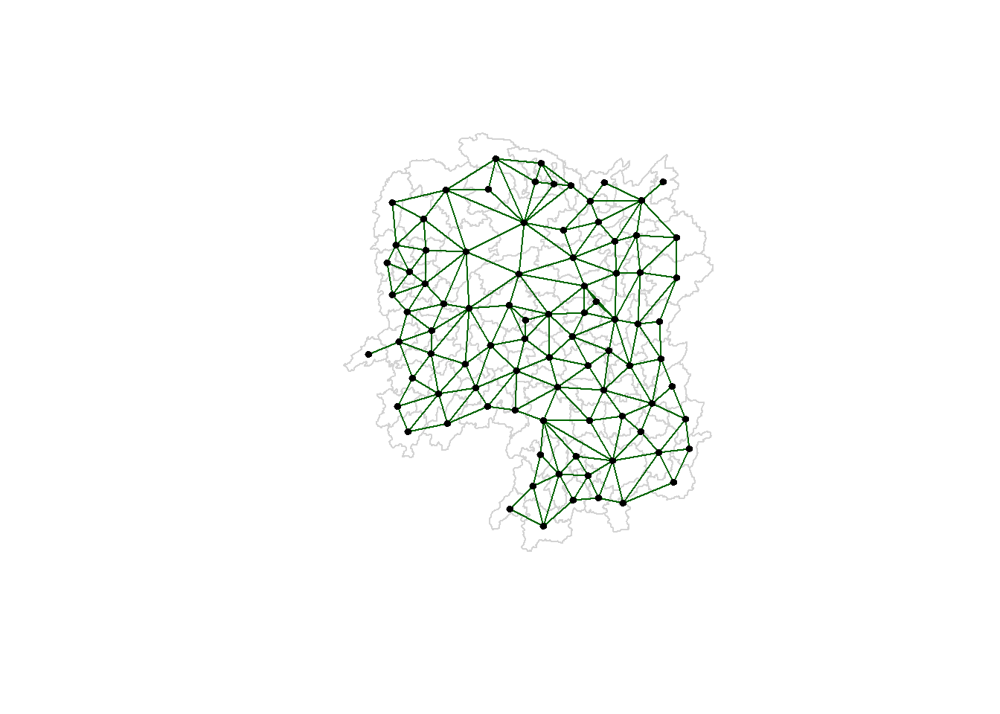
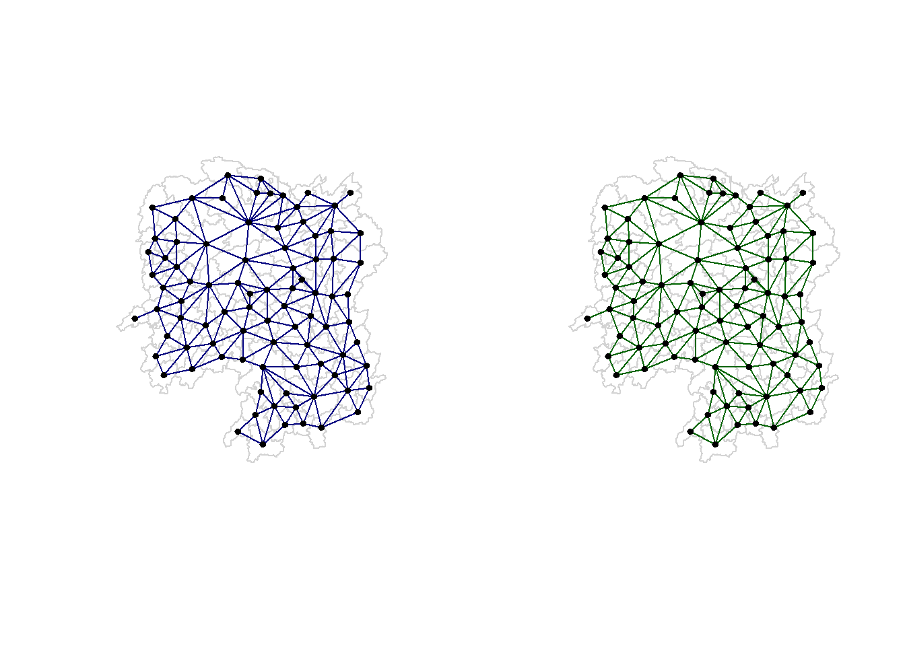

Linking to GEOS 3.9.1, GDAL 3.4.3, PROJ 7.2.1; sf_use_s2() is TRUE
Loading required package: spdep
Loading required package: sp
Loading required package: spData
To access larger datasets in this package, install the spDataLarge
package with: `install.packages('spDataLarge',
repos='https://nowosad.github.io/drat/', type='source')`
This code chunk will import ESRI shapefile into R. SVY21 is a Singapore projection system and the units is in metres. We also need to indicate the layer in the directory.
1.2.2 Importing polyline feature data in shapefile form
The code chunk below uses st_read() function of sf package to import CyclingPath shapefile into R as line feature data frame. We need the projected coordinated system as we want to calculate the distance. The projected crs reflect the earth with different country having different coordinated systems.
As the above data is having a geodetic CRS of WGS 84 which is not efficient for geospatial analysis and therefore needs to be transformed into Singapore system of 3414.
Importing and transforming into projected coordinates system
Reading layer `Hunan' from data source
`C:\hulwana\ISSS624\In-class_Ex\In-class_Ex1\data\geospatial2'
using driver `ESRI Shapefile'
Simple feature collection with 88 features and 7 fields
Geometry type: POLYGON
Dimension: XY
Bounding box: xmin: 108.7831 ymin: 24.6342 xmax: 114.2544 ymax: 30.12812
Geodetic CRS: WGS 84
1.3.2 Importing attribute data in csv
The below imported data contains data of demographic and finances data such as average wage, government expenses and revenue as well as population size for each areas in Hunan.
Rows: 88 Columns: 29
── Column specification ────────────────────────────────────────────────────────
Delimiter: ","
chr (2): County, City
dbl (27): avg_wage, deposite, FAI, Gov_Rev, Gov_Exp, GDP, GDPPC, GIO, Loan, ...
ℹ Use `spec()` to retrieve the full column specification for this data.
ℹ Specify the column types or set `show_col_types = FALSE` to quiet this message.
1.3.3 Performing relational join
To combine the geospatial dataset and attribute data of Hunan for further visualization and analysis, we will first need to join them based on a common key. As ‘County’ is the only key present in both datasets it will be joined based on this field.
hunan <-left_join(hunan, hunan2012)
Joining, by = "County"
1.4 Visualizing Regional Development Indicator
We will create 2 geo visualization, the first being the mapping of the different areas in Hunan (left diagram) and the second being the gdp density of the different areas in Hunan.
We observe that areas Liuyang, Ningxiang, Wangcheng, Zixing, Lengshuijiang and Changsha have GDPPC of 60,000 and above.
1.5 Computing Continuity Spatial Weight
1.5.1 Computing (QUEEN) continuity based neigbours
To compute Queen continuity weight matrix, we will use the poly2nb() of spdep package.
wm_q <-poly2nb(hunan, queen=TRUE)summary(wm_q)
Neighbour list object:
Number of regions: 88
Number of nonzero links: 448
Percentage nonzero weights: 5.785124
Average number of links: 5.090909
Link number distribution:
1 2 3 4 5 6 7 8 9 11
2 2 12 16 24 14 11 4 2 1
2 least connected regions:
30 65 with 1 link
1 most connected region:
85 with 11 links
The summary report above shows that there are 88 area units in Hunan. The most connected area unit has 11 neighbours. There are two area units with only one heighbours.
For each polygon in our polygon object, wm_q lists all neighboring polygons. For example, to see the neighbors for the first polygon in the object, type:
wm_q[[1]]
[1] 2 3 4 57 85
Polygon 1 has 5 neighbors. The numbers represent the polygon IDs as stored in hunan SpatialPolygonsDataFrame class.
We can retrieve the county name of Polygon ID=1 by using the code chunk below:
hunan$County[1]
[1] "Anxiang"
The output reveals that Polygon ID=1 is Anxiang county.
To reveal the county names of the five neighboring polygons, the code chunk will be used:
hunan$NAME_3[c(2,3,4,57,85)]
[1] "Hanshou" "Jinshi" "Li" "Nan" "Taoyuan"
We can retrieve the GDPPC of these five countries by using the code chunk below.
nb1 <- wm_q[[1]]nb1 <- hunan$GDPPC[nb1]nb1
[1] 20981 34592 24473 21311 22879
The printed output above shows that the GDPPC of the five nearest neighbours based on Queen's method are 20981, 34592, 24473, 21311 and 22879 respectively.
We can display the complete weight matrix by using str().
str(wm_q)
List of 88
$ : int [1:5] 2 3 4 57 85
$ : int [1:5] 1 57 58 78 85
$ : int [1:4] 1 4 5 85
$ : int [1:4] 1 3 5 6
$ : int [1:4] 3 4 6 85
$ : int [1:5] 4 5 69 75 85
$ : int [1:4] 67 71 74 84
$ : int [1:7] 9 46 47 56 78 80 86
$ : int [1:6] 8 66 68 78 84 86
$ : int [1:8] 16 17 19 20 22 70 72 73
$ : int [1:3] 14 17 72
$ : int [1:5] 13 60 61 63 83
$ : int [1:4] 12 15 60 83
$ : int [1:3] 11 15 17
$ : int [1:4] 13 14 17 83
$ : int [1:5] 10 17 22 72 83
$ : int [1:7] 10 11 14 15 16 72 83
$ : int [1:5] 20 22 23 77 83
$ : int [1:6] 10 20 21 73 74 86
$ : int [1:7] 10 18 19 21 22 23 82
$ : int [1:5] 19 20 35 82 86
$ : int [1:5] 10 16 18 20 83
$ : int [1:7] 18 20 38 41 77 79 82
$ : int [1:5] 25 28 31 32 54
$ : int [1:5] 24 28 31 33 81
$ : int [1:4] 27 33 42 81
$ : int [1:3] 26 29 42
$ : int [1:5] 24 25 33 49 54
$ : int [1:3] 27 37 42
$ : int 33
$ : int [1:8] 24 25 32 36 39 40 56 81
$ : int [1:8] 24 31 50 54 55 56 75 85
$ : int [1:5] 25 26 28 30 81
$ : int [1:3] 36 45 80
$ : int [1:6] 21 41 47 80 82 86
$ : int [1:6] 31 34 40 45 56 80
$ : int [1:4] 29 42 43 44
$ : int [1:4] 23 44 77 79
$ : int [1:5] 31 40 42 43 81
$ : int [1:6] 31 36 39 43 45 79
$ : int [1:6] 23 35 45 79 80 82
$ : int [1:7] 26 27 29 37 39 43 81
$ : int [1:6] 37 39 40 42 44 79
$ : int [1:4] 37 38 43 79
$ : int [1:6] 34 36 40 41 79 80
$ : int [1:3] 8 47 86
$ : int [1:5] 8 35 46 80 86
$ : int [1:5] 50 51 52 53 55
$ : int [1:4] 28 51 52 54
$ : int [1:5] 32 48 52 54 55
$ : int [1:3] 48 49 52
$ : int [1:5] 48 49 50 51 54
$ : int [1:3] 48 55 75
$ : int [1:6] 24 28 32 49 50 52
$ : int [1:5] 32 48 50 53 75
$ : int [1:7] 8 31 32 36 78 80 85
$ : int [1:6] 1 2 58 64 76 85
$ : int [1:5] 2 57 68 76 78
$ : int [1:4] 60 61 87 88
$ : int [1:4] 12 13 59 61
$ : int [1:7] 12 59 60 62 63 77 87
$ : int [1:3] 61 77 87
$ : int [1:4] 12 61 77 83
$ : int [1:2] 57 76
$ : int 76
$ : int [1:5] 9 67 68 76 84
$ : int [1:4] 7 66 76 84
$ : int [1:5] 9 58 66 76 78
$ : int [1:3] 6 75 85
$ : int [1:3] 10 72 73
$ : int [1:3] 7 73 74
$ : int [1:5] 10 11 16 17 70
$ : int [1:5] 10 19 70 71 74
$ : int [1:6] 7 19 71 73 84 86
$ : int [1:6] 6 32 53 55 69 85
$ : int [1:7] 57 58 64 65 66 67 68
$ : int [1:7] 18 23 38 61 62 63 83
$ : int [1:7] 2 8 9 56 58 68 85
$ : int [1:7] 23 38 40 41 43 44 45
$ : int [1:8] 8 34 35 36 41 45 47 56
$ : int [1:6] 25 26 31 33 39 42
$ : int [1:5] 20 21 23 35 41
$ : int [1:9] 12 13 15 16 17 18 22 63 77
$ : int [1:6] 7 9 66 67 74 86
$ : int [1:11] 1 2 3 5 6 32 56 57 69 75 ...
$ : int [1:9] 8 9 19 21 35 46 47 74 84
$ : int [1:4] 59 61 62 88
$ : int [1:2] 59 87
- attr(*, "class")= chr "nb"
- attr(*, "region.id")= chr [1:88] "1" "2" "3" "4" ...
- attr(*, "call")= language poly2nb(pl = hunan, queen = TRUE)
- attr(*, "type")= chr "queen"
- attr(*, "sym")= logi TRUE
1.5.2 Creating Rook continuity based neighbours
To compute Rook continuity weight matrix, we run the code chunk below;
wm_r <-poly2nb(hunan, queen =FALSE)summary(wm_r)
Neighbour list object:
Number of regions: 88
Number of nonzero links: 440
Percentage nonzero weights: 5.681818
Average number of links: 5
Link number distribution:
1 2 3 4 5 6 7 8 9 10
2 2 12 20 21 14 11 3 2 1
2 least connected regions:
30 65 with 1 link
1 most connected region:
85 with 10 links
Based on Rook continuity, we observe similar results in which areas 30 and 65 are both areas with the least neighbours whereas area 85 has the most neighbours.
1.5.3 Visualizing continuity weights
A connectivity graph takes a point and displays a line to each neighboring point. We are working with polygons at the moment, so we will need to get points in order to make our connectivity graphs. The most typically method for this will be polygon centroids. We will calculate these in the sf package before moving onto the graphs. Getting Latitude and Longitude of Polygon Centroids
We will need points to associate with each polygon before we can make our connectivity graph. It will be a little more complicated than just running st_centroid on the sf object: us.bound. We need the coordinates in a separate data frame for this to work. To do this we will use a mapping function. The mapping function applies a given function to each element of a vector and returns a vector of the same length. Our input vector will be the geometry column of us.bound. Our function will be st_centroid. We will be using map_dbl variation of map from the purrr package. For more documentation, check out map documentation
To get our longitude values we map the st_centroid function over the geometry column of us.bound and access the longitude value through double bracket notation [[]] and 1. This allows us to get only the longitude, which is the first value in each centroid.
1.5.3.1 Plotting Queen continuity based neighbours map
Based on the Queen continuity criterion, the link between the areas can be visualised using the following code:
## to plot the map outlineplot(hunan$geometry, border ="lightgrey")## to plot the links between each areasplot(wm_q, coords, pch =19, cex =0.6, add =TRUE, col ="navyblue")

1.5.3.2 Plotting Rook continuity based neighbours map
Based on the Rook continuity criterion, the link between the areas can be visualised using the following code:
## To plot the map outlineplot(hunan$geometry, border ="lightgrey")plot(wm_r, coords, pch =19, cex =0.6, add =TRUE, col ="darkgreen")

1.5.3.3 Plotting both Queen and Rook continuity based neighbours maps
We can arrange the above continuity plots side-by-side using the code below:
## To arrange 2 plots horizontallypar(mfrow=c(1,2))plot(hunan$geometry, border ="lightgrey")plot(wm_q, coords, pch =19, cex =0.6, add =TRUE, col ="navyblue", main ="Queen Continuity")plot(hunan$geometry, border ="lightgrey")plot(wm_r, coords, pch =19, cex =0.6, add =TRUE, col ="darkgreen", main ="Rook Continuity")

1.6 Computing distance based neighbours
In this section, we will derive distance-based weight matrices by using dnearneigh() of spdep package.
The function identifies neighbours of region points by Euclidean distance with a distance band with lower d1= and upper d2= bounds controlled by the bounds= argument. If unprojected coordinates are used and either specified in the coordinates object x or with x as a two column matrix and longlat=TRUE, great circle distances in km will be calculated assuming the WGS84 reference ellipsoid.
1.6.1 Determine the cut-off distance
Firstly, we need to determine the upper limit for distance band by using the steps below:
Return a matrix with the indices of points belonging to the set of the k nearest neighbours of each other by using knearneigh() of spdep.
Convert the knn object returned by knearneigh() into a neighbours list of class nb with a list of integer vectors containing neighbour region number ids by using knn2nb().
Return the length of neighbour relationship edges by using nbdists() of spdep. The function returns in the units of the coordinates if the coordinates are projected, in km otherwise.
Remove the list structure of the returned object by using unlist().
Min. 1st Qu. Median Mean 3rd Qu. Max.
24.79 32.57 38.01 39.07 44.52 61.79
The summary report shows that the largest first nearest neighbour distance is 61.79 km, so using this as the upper threshold gives certainty that all units will have at least one neighbour.
1.6.2 Computing fixed distance weight matrix
Now, we will compute the distance weight matrix by using dnearneigh() as shown in the code chunk below.